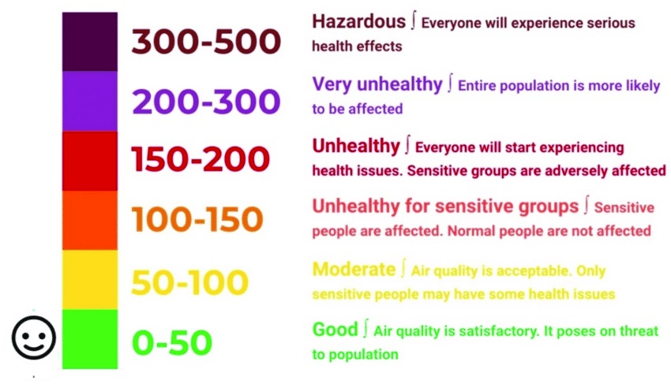
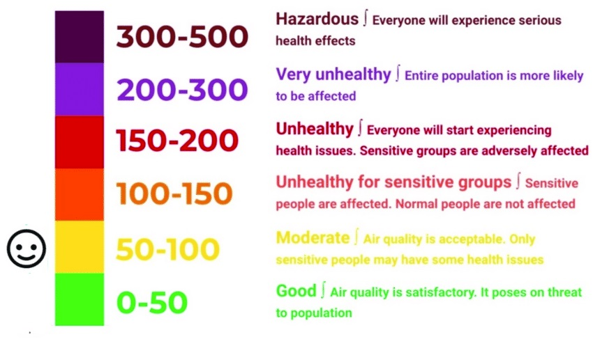
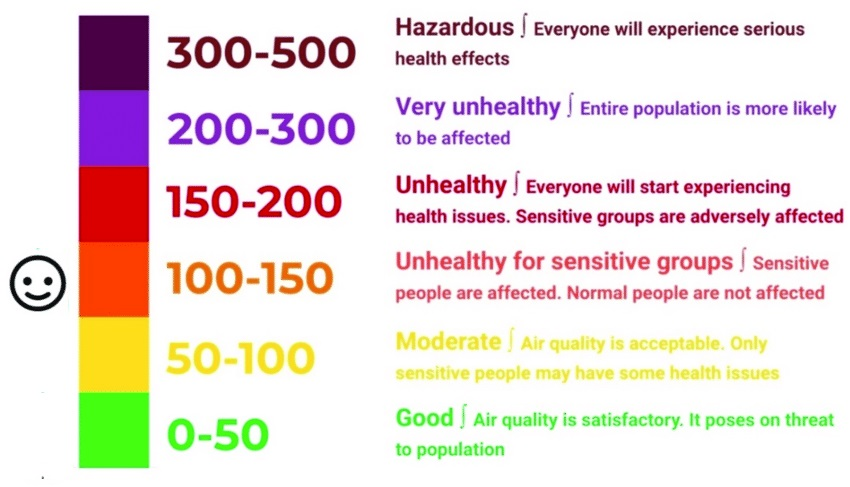
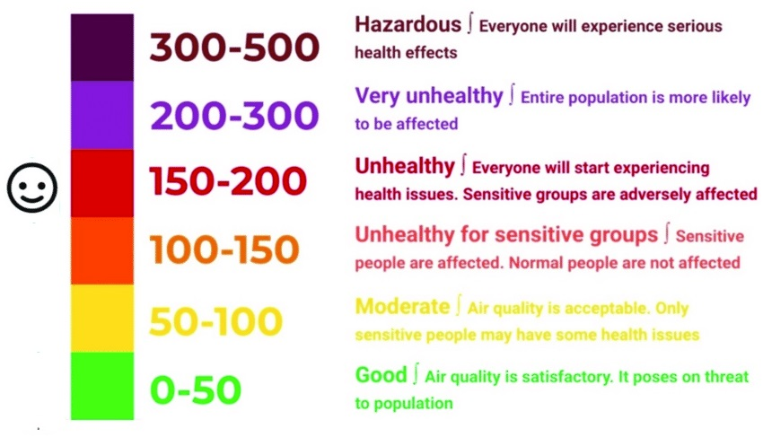
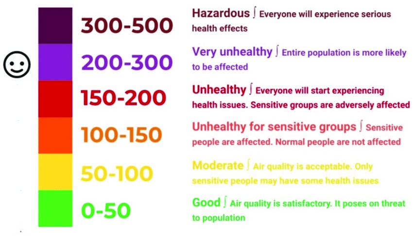
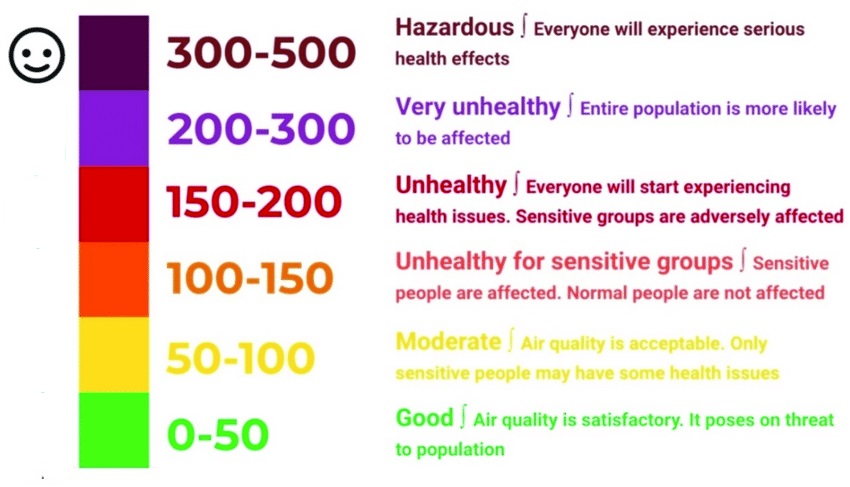

Predict Your Location AQI
{% if msg=="ok" %}
{% if mess=="" %}
{% else %}
{% endif %}
{% if result[1]=="Good" %}

{% elif result[1]=="Satisfactory" %}

{% elif result[1]=="Moderate" %}

{% elif result[1]=="Poor" %}

{% elif result[1]=="Very Poor" %}

{% elif result[1]=="Severe" %}

{% endif %}
{% else %}
A
{% endif %}
{% if msg=="ok" %}
Test Again {% endif %}
Test Result
Particulate Matter 2.5 (PM2.5): {{ view[5] }}
Particulate Matter 10 (PM10): {{ view[6] }}
Ammonia (NH3): {{ view[7] }}
AQI: {{ result[0] }}
{% if result[1]=="Good" %}AQI Bucket: {{result[1]}}
{% elif result[1]=="Satisfactory" %}AQI Bucket: {{result[1]}}
{% elif result[1]=="Moderate" %}AQI Bucket: {{result[1]}}
{% elif result[1]=="Poor" %}AQI Bucket: {{result[1]}}
{% elif result[1]=="Very Poor" %}AQI Bucket: {{result[1]}}
{% elif result[1]=="Severe" %}AQI Bucket: {{result[1]}}
{% endif %}Test Again {% endif %}